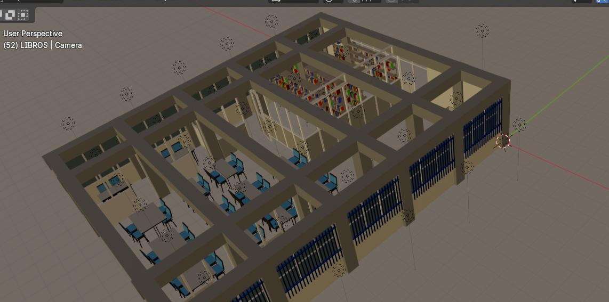
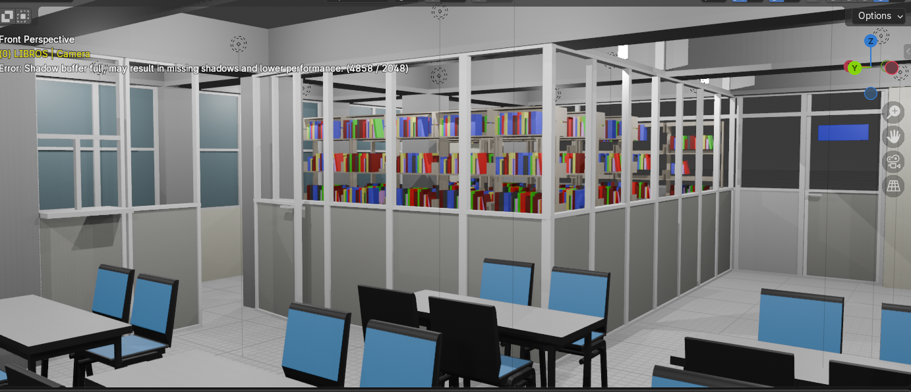

Proyecto 4
Modificación para la colocaciónd de una cancelería para la estantería
Mejora de los espacios físicos de las bibliotecas.
Desafío concreto
Mediante la colocación de una cancelería en la estantería de la biblioteca, se busca mejorar la organización y presentación de los libros, facilitando el acceso y la visibilidad de los mismos para los usuarios. Esta modificación no solo optimiza el espacio disponible, sino que también contribuye a crear un ambiente más acogedor y funcional, promoviendo así un mayor uso y disfrute de los recursos bibliográficos por parte de la comunidad académica.
Solución y Objetivos Claros
La propuesta de instalar una cancelería en la estantería de la biblioteca tiene como objetivo principal mejorar la seguridad y protección de los recursos bibliográficos, evitando daños accidentales y facilitando su conservación a largo plazo. Además, esta modificación busca optimizar el espacio disponible, permitiendo una mejor organización y presentación de los libros, lo que a su vez mejora la experiencia de los usuarios al facilitar el acceso y la visibilidad de los mismos. En conjunto, estos objetivos contribuyen a crear un entorno más funcional y acogedor, promoviendo un mayor uso y disfrute de los recursos bibliográficos por parte de la comunidad académica.
🎯 Objetivo Principal
Garantizar la preservación del acervo bibliográfico y disminuir significativamente el riesgo de daños y pérdidas.
📊 Cambio de enfoque
Buscar dirigirnos con un enfoque hacia lo digital teniendo seguro lo físico.
Modelo de cancelería
Imágenes y video del modelo digital que se propone para la cancelería que se instalará en la biblioteca.
Vista desde arriba
Vista desde piso
Video del modelo
Resultados de impacto medible
Reducción notable en los incidentes de daños y pérdidas de libros, lo que indicará una mejora sustancial en la preservación del acervo bibliográfico. Además, la organización y presentación de los recursos mejorará considerablemente, facilitando el acceso para los usuarios. Los usuarios valorarán el entorno más seguro y funcional.
Claves para Proyectos Emergentes
- ✓ Fumigación más económica y rápida
- ✓ Prescindir del arco de seguridad de alto costo
- ✓ Seguridad del cumplimiento para el cuadado del activo fijo de la UAQ
- ✓ Permite la flexibilidad en las funciones del personal de las bibliotecas para llevar a cabo actividades alineadas con la estrategia de integración de nuevas tecnologías